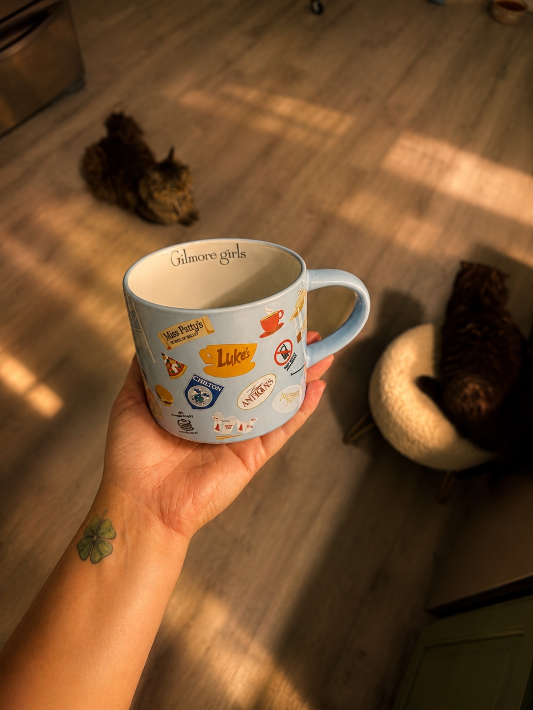

Подготовить телефон и увидеть кадр
Настройки iPhone, свет, ракурсы и смена планов.
iPhone · CapCut · немного волшебства в деталях
Научись замечать свет, собирать атмосферные кадры и обрабатывать видео на телефоне. Просто, спокойно и в своём ритме.
Хочу снимать красиво ↗Методичка и личные консультации на русском

little moments ♡Мой визуальный дневник
Дом, прогулки, любимые детали.
Вот так выглядит мой стиль в движении.
Нажми ▶, чтобы посмотреть. Звук включается только при воспроизведении.
От первого кадра до готового Reels
«Красивый контент на iPhone» — моя методичка для тех, кто хочет начать и сразу снимать осознаннее. С примерами, любимыми сочетаниями фильтров и финальным чек-листом.
Я работаю в CapCut Pro. Для точного повторения отдельных фильтров и эффектов может понадобиться подписка. Она не входит в стоимость.
Настройки iPhone, свет, ракурсы и смена планов.
Сильное начало, длина фрагментов, ритм, музыка и текст.
Мои сочетания фильтров, ручная коррекция и естественные цвета.
Настройки экспорта, проверка качества и чек-лист перед публикацией.
За кадром
Я живу в Северной Каролине, люблю природу, маленькие города и уютные домашние моменты. Свет на стене, тихая улица, чашка кофе — для меня с этого начинается история.
Мне нравится снимать и собирать эти кусочки в маленькие фильмы. И делиться тем, что помогает мне делать их красивыми.
Если тебе хочется понимать свой телефон и монтаж без тяжёлого обучения, я объясню всё простым языком. Начнём с основы, которую можно сразу попробовать.
Мой дневник в Instagram ↗Выбери свой первый шаг
В своём ритме
Твоя опора от настройки камеры до готового ролика.
Напиши мне → получи счёт PayPal → после подтверждения оплаты я лично отправлю файл.
Разбираемся вместе
Живой разговор, твои вопросы и понятные шаги для твоих видео.
В Telegram согласуем время и оплату через PayPal. Условия переноса обсудим до оплаты.
Оформление — в личной переписке с @dari_kansh. Отправка методички ручная, не автоматическая. Срок отправки сообщу до оплаты.
Можно спросить?
Да. Начинаем с настроек iPhone, света и выбора кадров, затем переходим к монтажу и обработке в CapCut.
Я использую Pro. Основы монтажа можно изучать в бесплатной версии, но платные фильтры и эффекты потребуется заменить доступными бесплатными. Повторение всех моих сочетаний без подписки не гарантируется; доступность функций зависит от версии приложения и региона.
Нет, это иллюстрированная методичка для самостоятельного изучения. Личная консультация — отдельный формат с видеозвонком.
Нажми «Хочу методичку» и отправь подготовленное сообщение в Telegram. Я пришлю счёт или ссылку PayPal, а после проверки оплаты — файл. Если текст не подставился, просто напиши «Хочу методичку».
Настройки камеры разобраны на iPhone. Методичка ориентирована именно на iPhone и CapCut.
Напиши на denisovad517@gmail.com — обсудим покупку или консультацию по почте.
Не нужно ждать особенного дня